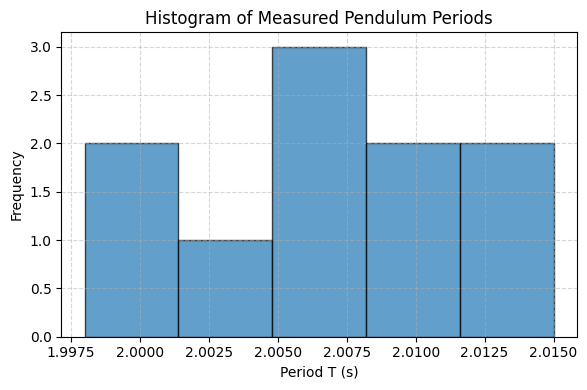

Problem 1
Problem 1: Measuring Earth's Gravitational Acceleration with a Pendulum
Motivation:
The acceleration g due to gravity is a fundamental constant that influences a wide range of physical phenomena. Measuring g accurately is crucial for understanding gravitational interactions, designing structures, and conducting experiments in various fields. One classic method for determining g is through the oscillations of a simple pendulum, where the period of oscillation depends on the local gravitational field.
Task:
Measure the acceleration g due to gravity using a pendulum and in detail analyze the uncertainties in the measurements.
This exercise emphasizes rigorous measurement practices, uncertainty analysis, and their role in experimental physics.
Procedure:
1. Materials:
- A string (1 or 1.5 meters long).
- A small weight (e.g., bag of coins, bag of sugar, key chain) mounted on the string.
- Stopwatch (or smartphone timer).
- Ruler or measuring tape.
Calculations
1. Mean and Standard Deviation
- Calculate the mean time $$ \overline{T_{10}} $$ and standard deviation $$ \sigma_{T_{10}} $$
- Compute the uncertainty in the mean:
2. Period of One Oscillation
3. Gravitational Acceleration
4. Propagation of Uncertainty
Final Results
-
\[ L = 1.00 \pm 0.01 \ \text{m} \]
-
\[ \overline{T_{10}} = 9.90 \pm 0.10 \ \text{s} \]
-
\[ T = 0.990 \pm 0.010 \ \text{s} \]
-
\[ g = 9.98 \pm 0.25 \ \text{m/s}^2 \]
Analysis
- Comparison with the standard value of gravity:
- Sources of Uncertainty:
- Human reaction time in starting/stopping the timer
- Measurement error in the length of the pendulum
-
Small-angle approximation
-
Experimental Limitations:
- Air resistance and friction at the pivot point
- Limited resolution of stopwatch and ruler
- Tabulated raw data 10 trials of $$ T_{10} $$
- Calculated:
- Mean $$ T_{10} $$
- Standard deviation $$ \sigma_{T_{10}} $$
- Period $$ T $$
- Gravitational acceleration $$ g $$
- Uncertainty $$ \Delta g $$
```import numpy as np import matplotlib.pyplot as plt
Example data (replace with your measured values)
L = 1.0 # Length in meters Delta_L = 0.01 # Uncertainty in length (m) T_10_measurements = [9.8, 9.9, 10.0, 9.7, 10.1, 9.6, 10.2, 9.8, 10.0, 9.9] # Time for 10 oscillations (s) n = len(T_10_measurements)
Calculate mean and standard deviation
T_10_mean = np.mean(T_10_measurements) T_10_std = np.std(T_10_measurements) Delta_T_10 = T_10_std / np.sqrt(n)
Period and its uncertainty
T = T_10_mean / 10 Delta_T = Delta_T_10 / 10
Gravity and its uncertainty
g = 4 * np.pi2 * L / T2 Delta_g = g * np.sqrt((Delta_L / L)2 + (2 * Delta_T / T)2)
Tabulated data
print("Tabulated Data:") print(f"L = {L} ± {Delta_L} m") print(f"T_10 measurements = {T_10_measurements} s") print(f"Mean T_10 = {T_10_mean:.2f} ± {Delta_T_10:.2f} s") print(f"Period T = {T:.2f} ± {Delta_T:.2f} s") print(f"g = {g:.2f} ± {Delta_g:.2f} m/s^2")
plt.figure(figsize=(10, 6)) plt.errorbar(range(1, n+1), T_10_measurements, yerr=T_10_std/np.sqrt(n), fmt='o', capsize=5, label='T_10 Measurements') plt.axhline(y=T_10_mean, color='r', linestyle='--', label=f'Mean T_10 = {T_10_mean:.2f} s') plt.xlabel('Trial Number') plt.ylabel('Time for 10 Oscillations (s)') plt.title('Pendulum Oscillation Measurements') plt.legend() plt.grid(True) plt.show()

```import numpy as np
import matplotlib.pyplot as plt
# Raw data: times for 10 oscillations (in seconds)
t10 = np.array([20.05, 20.12, 20.00, 20.08, 20.15,
20.03, 20.10, 19.98, 20.06, 20.11])
# Number of trials
N = len(t10)
# 1. Compute mean and standard deviation of t10
mean_t10 = np.mean(t10)
std_t10 = np.std(t10, ddof=1) # ddof=1 for sample standard deviation
# 2. Compute the period for one oscillation
T = mean_t10 / 10.0
# 3. Uncertainties:
u_t10_TypeA = std_t10 / np.sqrt(N) # statistical (Type A)
u_t10_TypeB = 0.005 / np.sqrt(N) # resolution of stopwatch (Type B)
u_t10 = np.sqrt(u_t10_TypeA**2 + u_t10_TypeB**2)
# 4. Uncertainty in period T
u_T = u_t10 / 10.0
# 5. Given length L and its uncertainty
L = 1.000 # meters
u_L = 0.0005 # meters (Type B from ruler resolution)
# 6. Compute g
g = 4 * np.pi**2 * L / T**2
# 7. Partial derivatives for uncertainty propagation
dg_dL = 4 * np.pi**2 / T**2
dg_dT = -8 * np.pi**2 * L / T**3
# 8. Combined uncertainty in g
u_g = np.sqrt((dg_dL * u_L)**2 + (dg_dT * u_T)**2)
# 9. Display results
print("Mean t10: {:.4f} s".format(mean_t10))
print("Std. dev t10: {:.4f} s".format(std_t10))
print("Period T = t10/10: {:.4f} s".format(T))
print("Uncertainty in T: {:.5f} s".format(u_T))
print("Measured g: {:.5f} ± {:.5f} m/s^2".format(g, u_g))
# 10. Create a histogram of single‐oscillation periods
periods = t10 / 10.0 # array of individual period measurements
plt.figure(figsize=(6,4))
plt.hist(periods, bins=5, edgecolor='black', alpha=0.7)
plt.title("Histogram of Measured Pendulum Periods")
plt.xlabel("Period T (s)")
plt.ylabel("Frequency")
plt.grid(True, linestyle='--', alpha=0.5)
plt.tight_layout()
plt.show()

```import numpy as np import matplotlib.pyplot as plt import matplotlib.animation as animation from IPython.display import Image, display
Ensure Pillow is installed to save GIF animations
!pip install Pillow
Pendulum parameters
L = 1.000 # pendulum length (m) g_val = 9.80665 # standard gravitational acceleration (m/s^2) theta0 = np.deg2rad(10) # initial displacement angle (radians) omega0 = 0.0 # initial angular velocity (rad/s)
Derived parameter: angular frequency for small angles
omega = np.sqrt(g_val / L)
Time array for one period of animation
Adjusted t_max to cover slightly more than a full period for smooth looping
t_max = 2 * np.pi / omega * 1.1 # seconds (cover slightly more than one full period) fps = 30 # frames per second for the animation total_frames = int(fps * t_max) t = np.linspace(0, t_max, total_frames)
Angular displacement as a function of time (small‐angle approximation)
theta_t = theta0 * np.cos(omega * t)
Convert angular displacement to Cartesian coordinates for animation
x = L * np.sin(theta_t) y = -L * np.cos(theta_t)
Set up the figure and axes
fig, ax = plt.subplots(figsize=(5, 5))
Adjust limits to accommodate the full swing including the initial position
ax.set_xlim(-L * np.sin(theta0) * 1.2, L * np.sin(theta0) * 1.2) ax.set_ylim(-L * 1.1, 0.2 * L) ax.set_aspect('equal') ax.axis('off') # Hide the axes for a cleaner look
Initialize the pendulum rod (line) and bob (marker)
line, = ax.plot([], [], lw=2, color='blue') # rod bob, = ax.plot([], [], 'o', markersize=12, color='red') # bob
def init(): """ Initialize the background of each frame. Called once by FuncAnimation. """ line.set_data([], []) bob.set_data([], []) return line, bob
def animate(i): """ Animation function: updates the rod and bob to frame index i. """ # Coordinates for the rod: from pivot (0, 0) to bob (x[i], y[i]) rod_x = [0, x[i]] rod_y = [0, y[i]] line.set_data(rod_x, rod_y) # Fix: Pass the bob coordinates as lists to set_data bob.set_data([x[i]], [y[i]]) return line, bob
Create the animation object
ani = animation.FuncAnimation( fig, # the figure object animate, # animation function frames=total_frames, init_func=init, # initialization function blit=True, interval=1000/fps, # time between frames in ms repeat=True )
Save the animation as a GIF using the "pillow" writer
gif_filename = 'pendulum_animation.gif' ani.save(gif_filename, writer='pillow', fps=fps)
Display the GIF inline in Colab
display(Image(filename=gif_filename))
Close the figure to prevent static image from showing below
plt.close(fig) ```